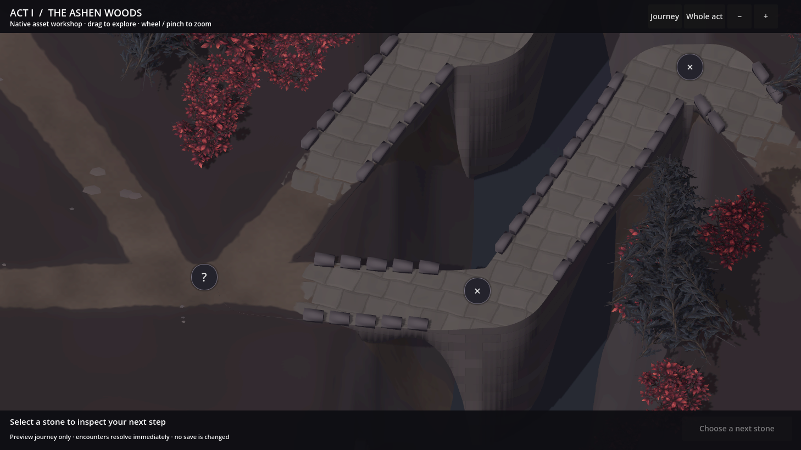
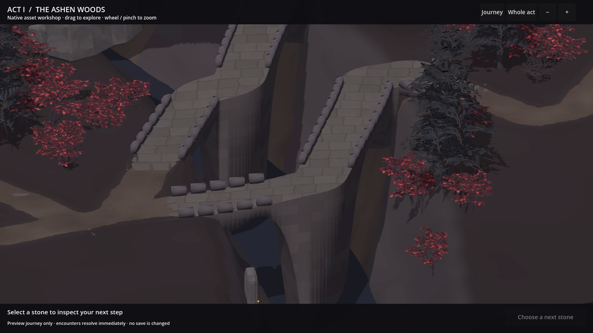
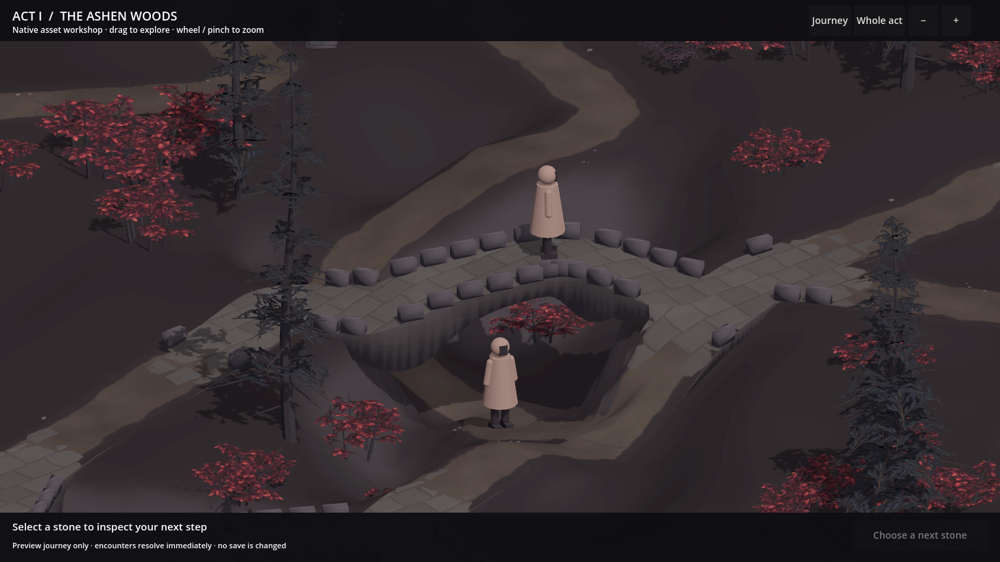
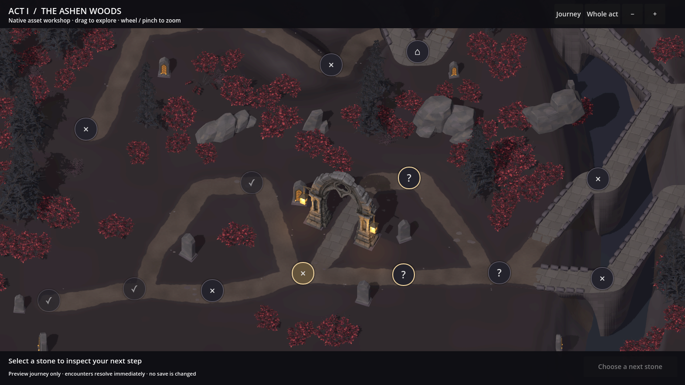
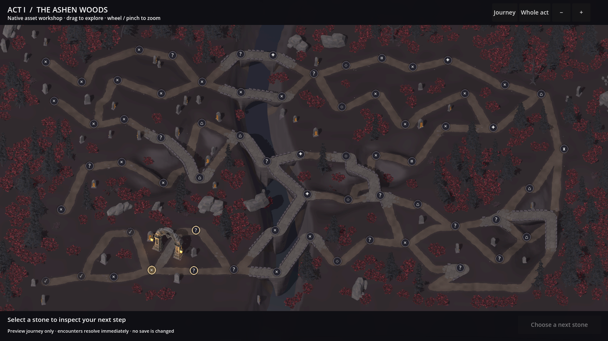

Where the road meets the bridge.
Worn stone emerges through the earth at each bridgehead. Soil gathers between the first flags and along the verge, while the paving continues through bends and shared landings.
The bridgehead, up close.
Choose a location and switch between 09 and 08 at the same camera position. Open the image to inspect it at full resolution.
Look at the first exposed stones and the road shoulders. Individual flags emerge through the earth, with a continuous pattern across the bridge.
{kind=link}

Partly buried stone
Firm, worn edges and unequal flags make the first stones readable within the earth path.
Connected surfaces
The approach follows the ground beneath it. Paving keeps one continuous pattern through the turn and its adjoining paths.
The depth remains
The river valley, rolling banks and real bridge openings carry forward from Review 08.
The bridges in the landscape.
Lower inspection angles show the road approaches, banks and openings beneath the stone decks.


The wider setting.
All twelve natural model types remain, with the established gateway scale and woodland palette.

View the complete generated act

Checks behind this revision
The approach-surface check found 5,533 ground intersections in Review 08. After the repair, all 284,310 samples across the revised approach triangles are above the land, including their edges and interiors.
Fresh checks pass 19,704 route and shoulder contacts, 1,887 bridge-width probes and three additional bend, branch and loop cases. The three checked bridge openings retain at least 3.08 m, 2.36 m and 2.40 m of clearance; all 153 adult-body positions pass.
Phone, pad and desktop reference dimensions pass drag, wheel zoom, node selection and legal preview travel. These are native desktop renders at the reference dimensions. Broader layout and device qualification remains part of production.
{kind=link}
{kind=link}
{kind=link}